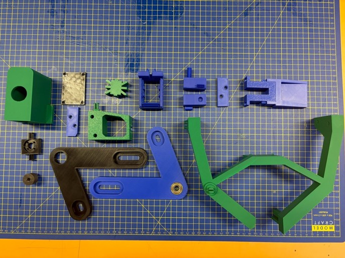
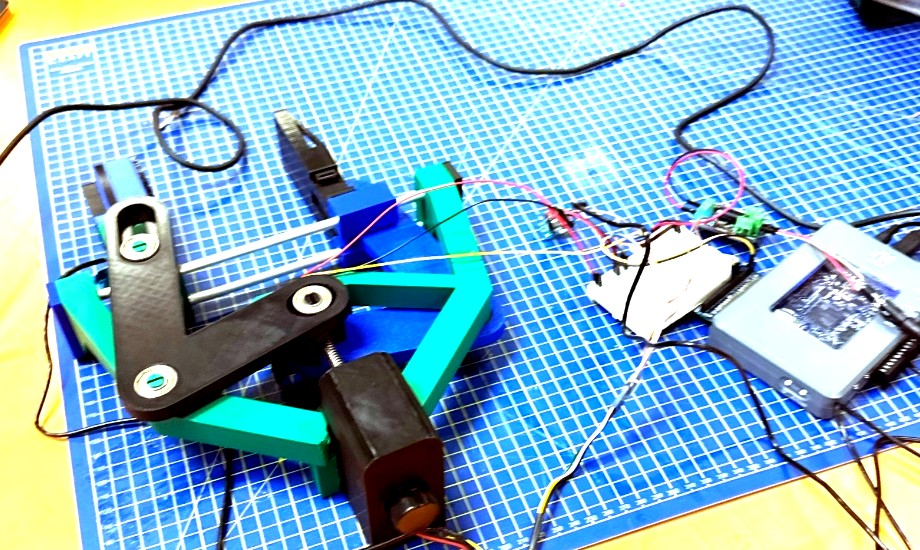
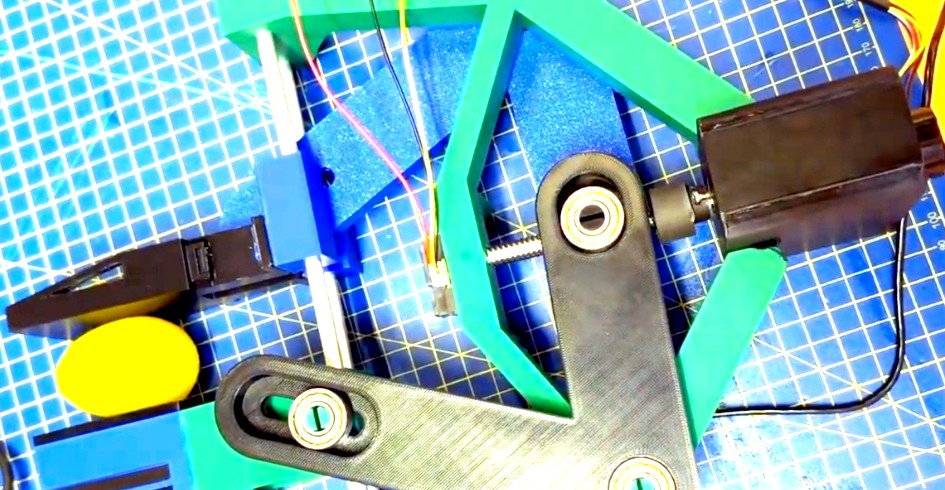

Projects → Robotic Gripper
Robotic Gripper - design, build & test
Designed around supplied RMIT hardware (34:1 DC motor with encoder, Sabertooth 2x5 driver, Sharp IR sensor, TAS606 load cell, and NI myRIO) to deliver at least 50 N of mechanical grip capability whilst limiting applied force to 15 N on an artificial egg.
Key numbers
| Force brief | Capable of ≥ 50 N, never apply > 50 N (15 N egg setpoint) |
| Axial screw thrust | 369.5 N total (184.7 N per finger link) |
| Delivered finger force | 121.9 N closed → 164.8 N near full open (2.44× margin at worst case) |
| Controlled egg force | 13.4 N recorded against 15 N software stop |
| Jaw opening & stroke | 105 mm measured (95 mm CAD) over 36.5 mm nut travel |
| Full close time | 4.89 s calculated at 7.47 mm/s (~5 s onto egg, 7–8 s full stroke) |
| Drivetrain & materials | Quad-start T8 screw (8 mm lead, η ≈ 0.588), PLA structure, TPU pad, PA-6 coupler |
The brief
The brief had two opposing force requirements: mechanical capability of at least 50 N, with operating force capped strictly below 50 N. We split those roles cleanly: an 8 mm lead-screw bell-crank linkage provided high mechanical advantage, whilst LabVIEW load-cell feedback enforced the ceiling. We lowered the egg setpoint from 20 N to 15 N to protect the PLA arms and added a moving-average filter to reject load-cell noise.
1. Jaw motion: linear bell-crank over rotational jaws
| Option | Jaw motion | Assessment |
|---|---|---|
| Rotational scissor | Pivots along an arc | Simplest to print, however the jaw face rolls across the egg shell and pushes it outward. |
| 4-bar linkage | Parallel along a shallow arc | Keeps faces flat, however six+ printed pin joints accumulate backlash and compliance. |
| Lead screw + bell-crank (chosen) | Linear translation on guide rods | Guarantees parallel jaw contact and multiplies 0.8 N·m into 369.5 N thrust without a printed gearbox, trading off closing speed. |
2. Transmission
| Option | Why chosen / rejected |
|---|---|
| T8 lead screw + brass nut (chosen) | High force multiplication (2.44× margin above 50 N at worst case) with zero printed gear backlash. |
| Rack & pinion / spur gears | Printed gear teeth introduce backlash and wear, and a rack needs an extra gearbox for force. |
| Cam / belt drive | Cams are highly tolerance-sensitive, whilst belts stretch and only pull in one direction. |
3. Materials (PLA, TPU & PA-6 Nylon)
| Material | Role & reasoning |
|---|---|
| PLA (structure) | Stiffest and most dimensionally accurate filament for bearing press-fits and snap clips, printed flat with 4 perimeters so loads run along XY layers. |
| TPU (Finger 2 pad) | Flexible gripping face that conforms gently to the egg shell instead of creating a point load. |
| PA-6 Nylon (coupler) | Replaced the initial PLA shaft coupler after 0.8 N·m sheared it along a layer line. |
PETG and ABS/ASA were ruled out for the main body due to stringing on small clips and unnecessary chamber requirements. During testing, the motor cage also lost its friction grip and was secured with superglue for lab demos (a bolted flange is planned next).
4. Control, calibration & safety
- LabVIEW loop (50 ms / 20 Hz): evaluates priority Select blocks (E-Stop → Manual → 15 N force stop → Open → IR auto-close) with discrete position PID (Kp = 0.08, Ki = 0.0002, Kd = 1.8) clamped to 2.5 ± 1.0 V (40% speed) for gentle contact.
- Load cell calibration: TAS606 zeroed at 0.069 V, calibrated in Excel (85.354 kg/V), filtered via moving-average Express VI:
F ≈ 836.5 × (VLC − 0.069). - IR detection: Sharp GP2Y0A21YK0F fitted as
d = 24 / VIR, triggering strictly between 10–15 cm (avoiding close-range fold-back and failing safe on disconnected wires). - Safety: software E-Stop sets 2.5 V stop and resets the myRIO, manual Force Stop override is always available, and because the T8 screw/34:1 gearbox self-locks, jaws are opened via Manual Mode rather than forced by hand.
Design calculations
1. Axial screw thrust
From standard power-screw mechanics (Budynas & Nisbett 2020) with T = 0.8 N·m, N = 56 rpm, quad-start T8 lead L = 8 mm (2 mm pitch × 4 starts), and assumed steel-on-bronze friction μ = 0.19 (lead angle α = 14.32°, friction angle φ = 10.76°, efficiency η = 0.588):
Note: correcting our preliminary 2 mm pitch vs 8 mm lead error updated both thrust and closing speed by a factor of four. Friction μ carries the largest model uncertainty.
2. Bell-crank force transfer
Starting from a 30.27 mm closed datum, 36.5 mm of nut travel opens the jaws to 95 mm in CAD. Both 5 mm Excel increments from SolidWorks and the analytical virtual-work ratio q = 2(yJ − yP)a / (r1² sin²φ) show a 35% drop in mechanical advantage from open to closed. Because the egg sits near the closed end, the minimum closed force (121.9 N/finger) governs capability:
| Opening (mm) | Per finger (mm) | Nut travel x (mm) | F per finger (N) | F combined (N) |
|---|---|---|---|---|
| 90 | 45.0 | 34.27 | 164.78 | 329.55 |
| 75 | 37.5 | 27.81 | 156.65 | 313.29 |
| 50 | 25.0 | 17.77 | 143.35 | 286.69 |
| 25 | 12.5 | 8.53 | 132.26 | 264.53 |
| 0 (closed) | 0 | 0 | 121.92 | 243.84 |
Full 20-step stroke table (Excel model)
| Opening (mm) | y (mm) | Screw datum (mm) | x (mm) | F/finger (N) | F total (N) | Step t (s) |
|---|---|---|---|---|---|---|
| 95 | 47.5 | 66.77 | 36.50 | - | - | 0.30 |
| 90 | 45.0 | 64.54 | 34.27 | 164.78 | 329.55 | 0.29 |
| 85 | 42.5 | 62.35 | 32.08 | 161.82 | 323.64 | 0.29 |
| 80 | 40.0 | 60.20 | 29.93 | 158.86 | 317.73 | 0.28 |
| 75 | 37.5 | 58.08 | 27.81 | 156.65 | 313.29 | 0.28 |
| 70 | 35.0 | 56.00 | 25.73 | 153.69 | 307.38 | 0.27 |
| 65 | 32.5 | 53.96 | 23.69 | 150.74 | 301.47 | 0.27 |
| 60 | 30.0 | 51.95 | 21.68 | 148.52 | 297.04 | 0.26 |
| 55 | 27.5 | 49.98 | 19.71 | 145.56 | 291.13 | 0.26 |
| 50 | 25.0 | 48.04 | 17.77 | 143.35 | 286.69 | 0.26 |
| 45 | 22.5 | 46.13 | 15.86 | 141.13 | 282.26 | 0.25 |
| 40 | 20.0 | 44.25 | 13.98 | 138.91 | 277.83 | 0.25 |
| 35 | 17.5 | 42.40 | 12.13 | 136.70 | 273.39 | 0.24 |
| 30 | 15.0 | 40.59 | 10.32 | 133.74 | 267.48 | 0.24 |
| 25 | 12.5 | 38.80 | 8.53 | 132.26 | 264.53 | 0.24 |
| 20 | 10.0 | 37.04 | 6.77 | 130.05 | 260.09 | 0.23 |
| 15 | 7.5 | 35.31 | 5.04 | 127.83 | 255.66 | 0.23 |
| 10 | 5.0 | 33.60 | 3.33 | 126.35 | 252.70 | 0.23 |
| 5 | 2.5 | 31.92 | 1.65 | 124.14 | 248.27 | 0.22 |
| 0 | 0 | 30.27 | 0 | 121.92 | 243.84 | - |
| Total calculated close time | 4.89 s | |||||
3. Speed, brief check & finger stress
Worst-case capability = 121.9 N/finger (2.44× over 50 N brief) | Egg limit = 15 N (13.4 N measured)
Finger root bending (164.8 N × 55 mm, Z ≈ 1000 mm³): σ = 9.1 MPa vs 30 MPa knocked-down PLA → FoS = 3.3
Private load-cell tests reached 60–80 N without cracking the PLA arms before manual shutoff. Full-stroke closing took 7–8 s physically because automatic PID output was clamped to 40% speed to curb filter-lag overshoot.
4. Calculated vs measured
| Parameter | Calculated | Measured |
|---|---|---|
| Grip force on egg | 121.9 N/finger capability | 13.4 N (15 N limit, 60–80 N verified privately) |
| Max jaw opening | 95 mm (36.5 mm nut stroke) | 105 mm (~40 mm manual datum stroke) |
| Close time | 4.89 s (100% speed) | ~5 s onto egg, 7–8 s full stroke (40% speed) |
Related calculator
Test how thread pitch, starts, and friction affect screw efficiency and self-locking directly.
CAD & mechanical layout
After ruling out rotational geared jaws and dual racks, we built the T8 lead-screw bell-crank layout across 15 printed parts on a Bambu Lab X1C (0.20 mm layers, 4 perimeters, 20% gyroid infill). Both finger carriages slide on twin 6 mm aluminium guide rods rather than plastic tracks, whilst six 608ZZ bearings roll inside the bell-crank slots (upper and lower arms mirrored around the frame) to minimise sliding friction. The brass flange nut mounts into a square recessed block with four evenly tightened M3 bolts.
All structural parts were printed flat with 3 mm root fillets and ~0.20 mm bearing pin clearance. During assembly, the 6 mm guide-rod bores were hand-reamed for smooth glide, the Finger 2 pad was printed in TPU behind the TAS606 load cell, and the sheared PLA coupler was reprinted in PA-6 nylon.
Interactive mechanism demonstration
Drag the stroke and geometry sliders below to inspect how nut position drives jaw opening and virtual-work force transfer in real time.
Manufacture & assembly


Electronics & LabVIEW debugging
All I/O runs through myRIO Connector B: TAS606 load cell on B/AI0, Sharp IR sensor on B/AI1 via soldered JST lead, encoder A/B on digital inputs, and 0–5 V motor command on B/AO0 to the Sabertooth 2x5 (2.5 V stop). Two hardware faults initially masqueraded as LabVIEW bugs: a dead Sharp IR unit (resolved by swapping sensors) and the motor slipping inside its friction-fit housing (fixed with superglue for testing).
Working demonstration


Test results
| Test | Target | Result | Outcome |
|---|---|---|---|
| Egg detection (RE-1) | IR peak in 10–15 cm range | Detected reliably | Pass |
| Jaw opening (RE-2) | ≥ 100 mm | 105 mm measured | Pass |
| Force regulation (RE-3) | 10–15 N under control | 12.2 N initial test | Pass |
| Closing time (RE-4) | 4.89 s calculated | ~5 s onto egg, 7–8 s full stroke (40% speed cap) | Fail |
| Egg grip (RE-5) | < 15 N, no damage | 13.4 N, no damage | Pass |
| Hold under lift (RE-6) | No slip during pull | Held securely | Pass |
| Auto close (RE-7) | Detect and grip unaided | Worked as intended | Pass |
| Auto reopen (RE-8) | Return to zero when removed | IR beam clipped closed jaws | Fail |
| Manual control (RE-9) | Front-panel open/close | Worked reliably | Pass |
| Emergency stop (RE-10) | Immediate halt & exit | Stopped cleanly | Pass |
| Repeatability | Consistent cycles | ~10 cycles (manual reopen) | Partial |
Unresolved issue & modelled vs measured gap
Auto-reopen failure: Lecturers confirmed the LabVIEW logic worked properly, pointing to an optical cause. Once closed, the Sharp IR beam clipped the inner edges of the jaws inside the 10–15 cm window, so the boolean never cleared. Moving or angling the sensor forward of the jaws fixes this.
95 mm CAD vs 105 mm actual opening: Winding the screw manually to thread end before power-up plus bearing/reamed clearances gave ~40 mm nut travel instead of 36.5 mm, helping us pass the ≥ 100 mm spec.
Key takeaways & next improvements
- Check the right end of the stroke: closed-end force (121.9 N) governs capability, whilst open-end force (164.8 N) governs PLA stall stress.
- Verify thread parameters early: fixing pitch (2 mm) vs lead (8 mm) shifted force and speed by 4×.
- Filter lag trades off speed: moving-average smoothing stopped false triggers, however required capping speed to 40% to avoid overshoot.
- Next revision: relocate the IR sensor forward, replace the glued motor cage and nylon coupler with M3 face mounts and an aluminium jaw coupler, and add a LabVIEW latch plus PID anti-windup on force stop.